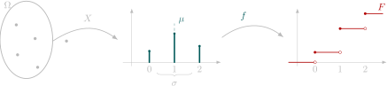
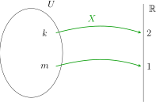
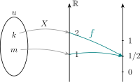

Hoofdstuk 3Discrete kansvariabelen

Leerplandoelstellingen (GO! Navigator)
Basisvorming (BV3_06)
-
• BV3_06.13 (MD 06.13) De leerlingen bepalen kansen met behulp van kruistabellen, boomdiagrammen en de wet van Laplace.
-
– afbakening: verband tussen relatieve frequentie en kans
-
-
• BV3_06.21 (MD 06.21) De leerlingen gebruiken ICT om berekeningen uit te voeren en grafische voorstellingen te maken.
Gevorderde wiskunde (WD3_06.08)
-
• WD3_06.08.33 (MD 06.08.34) De leerlingen lossen telproblemen op met en zonder herhaling en waarbij de volgorde al dan niet van belang is.
-
– afbakening: binomium van Newton
-
– afbakening: driehoek van Pascal
-
– afbakening: duiventilprincipe van Dirichlet
-
-
• WD3_06.08.35 (MD 06.08.35) De leerlingen berekenen en interpreteren kansen met behulp van de binomiale verdeling.
-
– afbakening: verwachtingswaarde, standaardafwijking
-
-
• WD3_06.08.37 De leerlingen leggen in betekenisvolle situaties de betekenis van betrouwbaarheidsniveau, betrouwbaarheidsinterval en foutenmarge uit.
-
– afbakening: steekproefverdeling (gemiddelde en standaardafwijking)
-
– afbakening: verband met steekproefgrootte en standaardafwijking
-
Didactische uitwerking: de wet van Laplace, grafische voorstellingen, verwachtingswaarde, standaardafwijking, verband met steekproefgrootte en standaardafwijking
Extra uitleg: kansvariabele, discrete en continue kansvariabelen, kansdichtheidsfunctie van een discrete kansvariabele, verdelingsfunctie van een discrete kansvariabele, variantie, eigenschappen van de verwachtingswaarde en de variantie, \(\sqrt {n}\)-wet
I Kansvariabele
1 Voorbeeld 1: Een zuiver muntstuk opgooien
Een speler gooit een zuiver muntstuk op. Er wordt afgesproken dat hij 2 EUR krijgt als hij kop werpt en 1 EUR als hij munt werpt.
We kunnen hiervoor een uitkomstenverzameling \(U\) opstellen en vervolgens met elk element van \(U\) een reëel getal associëren.
\[U=\{\opl [2cm]{\begin {matrix} k \\ \downarrow \\ 2 \end {matrix}},\opl [2cm]{\begin {matrix} m \\ \downarrow \\ 1 \end {matrix}}\}\]
\(\seteqnumber{0}{}{0}\)\begin{align*} k &\rightarrow \opl [2cm]{2}\\ m &\rightarrow \opl [2cm]{1} \end{align*}
Op deze manier krijgen we een functie \(X\) van de uitkomstenverzameling \(U\) naar de verzameling van de reële getallen \(\mathbb {R}\). We noemen zo’n functie een kansvariabele \(X\) of
toevalsveranderlijke \(X\).
Schematisch stellen we dit als volgt voor:

2 Voorbeeld 2: Controle van geleverde onderdelen
Van de onderdelen geleverd door een onbetrouwbare leverancier is \(25\%\) defect. Bij een controle onderzoeken we twee onderdelen en tellen we het aantal defecte stukken. Stel hierbij een defect stuk voor door de letter \(d\) en
een goed stuk door de letter \(g\).
Dan vinden we
\[U=\{\opl [2.2cm]{\begin {matrix} (d,d) \\ \downarrow \\ 2 \end {matrix}}, \opl [2.2cm]{\begin {matrix} (d,g) \\ \downarrow \\ 1 \end {matrix}}, \opl [2.2cm]{\begin {matrix} (g,d) \\ \downarrow \\ 1 \end {matrix}}, \opl [2.2cm]{\begin {matrix} (g,g) \\ \downarrow \\ 0 \end {matrix}}\}\]
We associëren opnieuw met elk element van \(U\) een reëel getal, namelijk het aantal defecte onderdelen.
\(\seteqnumber{0}{}{0}\)\begin{align*} (d,d) &\rightarrow \opl [2cm]{2} & (g,d) &\rightarrow \opl [2cm]{1}\\ (d,g) &\rightarrow \opl [2cm]{1} & (g,g) &\rightarrow \opl [2cm]{0} \end{align*}
We krijgen ook nu een kansvariabele \(X\) van de uitkomstenverzameling \(U\) naar de verzameling van de reële getallen \(\mathbb {R}\).
Schematisch:
3 Definitie
Bij het uitvoeren van een experiment met uitkomstenverzameling \(U\) en kansvariabele \(X\), noemen we een kansvariabele \(X\) een functie die elk element van \(U\) afbeeldt op een reëel getal.
\[X:U \rightarrow \mathbb {R}: u \rightarrow X(u)=x\]
4 Discrete en continue kansvariabelen
Een kansvariabele \(X\) noemen we discreet, als de verzameling van haar mogelijke getalwaarden
-
• ofwel eindig is (voorbeelden 1 en 2)
-
• ofwel oneindig aftelbaar is (bv. \(\mathbb {N}\))
Een kansvariabele \(X\) noemen we continu, als de verzameling van haar mogelijke getalwaarden overaftelbaar is (bv. \(\mathbb {R}\) of een interval van \(\mathbb {R}\)).
In dit hoofdstuk zullen we ons concentreren op discrete kansvariabelen. In hoofdstuk 4 behandelen we hier dan enkele specifieke voorbeelden op. In hoofdstuk 5 zullen de continue kansvariabelen met enkele specifieke voorbeelden bekeken worden.
5 Oefeningen
Oefening 1
Een fietsenmaker heeft een doos met tien fietsbellen. Er zijn zes goede en vier defecte, maar dat weet hij niet. Hij test de bellen één voor één tot hij een goede fietsbel te pakken heeft. Een fietsbel die getest is, wordt niet terug in de
doos gestoken. We beschouwen het aantal geteste fietsbellen als een kansvariabele.
Welke waarden kan die kansvariabele aannemen? {1, 2, 3, 4, 5}
Oefening 2
Je gooit met twee dobbelstenen na elkaar. Als kansvariabele neem je de som van het aantal ogen.
Welke waarden kan die kansvariabele aannemen? {2, 3, 4, 5, 6, 7, 8, 9, 10, 11, 12}
II Kansdichtheidsfunctie van een discrete kansvariabele
We hernemen de voorbeelden uit het eerste deel van dit hoofdstuk.
1 Voorbeeld 1: Een zuiver muntstuk opgooien
Een speler gooit een zuiver muntstuk op. Er wordt afgesproken dat hij 2 EUR krijgt als hij kop werpt en 1 EUR als hij munt werpt.
Wat is de kans dat de speler 1 EUR krijgt, wat is de kans om 2 EUR te krijgen?
Hiertoe associëren we met de beelden van de kansvariabele \(X\) een kansdichtheidsfunctie \(f\) van \(\mathbb {R}\) naar \([0;1]\):

Kans op het krijgen van 2 EUR = \(P(X=2)=P(\{\)kop\(\})=\frac {1}{2}=\opl [2cm]{f(2)}\)
Kans op het krijgen van 1 EUR = \(P(X=1)=P(\{\)munt\(\})=\frac {1}{2}=\opl [2cm]{f(1)}\)
2 Voorbeeld 2: Controle van geleverde onderdelen
Van de onderdelen geleverd door een onbetrouwbare leverancier is \(25\%\) defect. Bij een controle onderzoeken we twee onderdelen en tellen we het aantal defecte stukken.
Wat is de kans dat \(X\) respectievelijk de getalwaarden 0, 1 en 2 aanneemt?
Kans op 0 defecte stukken = \(P(X=0)=f(0)=\opl {0,5625 = \frac {9}{16}}\)
Kans op 1 defecte stuk = \(P(X=1)=f(1)=\opl {0,375 = \frac {6}{16}}\)
Kans op 2 defecte stukken = \(P(X=2)=f(2)=\opl {0,0625 = \frac {1}{16}}\)
We krijgen opnieuw een kansdichtheidsfunctie \(f\) van de kansvariabele \(X\) van \(\mathbb {R}\) naar \([0;1]\).
We kunnen dit ook in een tabelvorm schrijven, die duidelijker de analogie met de beschrijvende statistiek uit het vierde jaar weergeeft.
| \(x_i\) | \(f(x_i)\) |
| 0 | \(0,5625 = \frac {9}{16}\) |
| 1 | \(0,375 = \frac {6}{16}\) |
| 2 | \(0,0625 = \frac {1}{16}\) |
3 Definitie
Bij het uitvoeren van een experiment met uitkomstenverzameling \(U\) en kansvariabele \(X\), noemen we de kansdichtheidsfunctie van \(X\) de functie van \(\mathbb {R}\) naar \([0;1]\) die aangeeft met welke
kans elke getalwaarde van \(X\) wordt aangenomen.
\[f:\mathbb {R} \rightarrow [0;1]: x_i \rightarrow f(x_i)=P(X=x_i)\]
4 Grafische voorstelling van een kansdichtheidsfunctie
We stellen zo’n kansdichtheidsfunctie vaak grafisch voor met een staafjesdiagram (ook: staafdiagram).
Staafjesdiagram van een kansfunctie
Bij een discrete toevalsvariabele \(X\) met waarden \(x_1,x_2,\dots \) tekenen we op de \(x\)-as de mogelijke waarden \(x_i\). Boven elke \(x_i\) tekenen we een verticale staaf met hoogte \(f(x_i)=P(X=x_i)\).
Voorbeeld 1: Een zuiver muntstuk opgooien
Een speler gooit een zuiver muntstuk op. Er wordt afgesproken dat hij 2 EUR krijgt als hij kop werpt en 1 EUR als hij munt werpt.
Voorbeeld 2: Controle van geleverde onderdelen
Van de onderdelen geleverd door een onbetrouwbare leverancier is \(25\%\) defect. Bij een controle onderzoeken we twee onderdelen en tellen we het aantal defecte stukken.
Tabel
| \(x_i\) | \(f(x_i)\) |
| 0 | \(0.5625=\frac {9}{16}\) |
| 1 | \(0.375=\frac {6}{16}\) |
| 2 | \(0.0625=\frac {1}{16}\) |
III Verdelingsfunctie van een discrete kansvariabele
1 Definitie
We definiëren de (cumulatieve) verdelingsfunctie \(F\) van een kansvariabele \(X\) als
\[ F(x_i)=P(X\leq x_i)\opl {=\sum _{x_j\le x_i} f(x_j).} \]
2 Opmerking
De verdelingsfunctie \(F\) kan vergeleken worden met de cumulatieve relatieve frequentie uit de cursus beschrijvende statistiek uit het vierde jaar.
3 Grafische voorstelling van een verdelingsfunctie
Omdat \(X\) slechts sprongsgewijs kansen opstapelt, is \(F\) een trapfunctie (stapfunctie): ze is constant tussen twee mogelijke waarden en maakt sprongen ter hoogte van de \(x_i\).
Trapfunctie van de verdelingsfunctie
In de grafiek teken je horizontale stukken (trappen). Op elk sprongpunt \(x_i\):
-
• een open bolletje op het oude niveau (waarde vlak vóór \(x_i\)),
-
• een gevuld bolletje op het nieuwe niveau (waarde in \(x_i\), want \(X\le x_i\)).
Voorbeeld 1: Een zuiver muntstuk opgooien
Voorbeeld 2: Controle van geleverde onderdelen
Tabel
| \(x_i\) | \(f(x_i)\) | \(F(x_i)\) |
| 0 | \(0,5625=\frac {9}{16}\) | \(\frac {9}{16}\) |
| 1 | \(0,375=\frac {6}{16}\) | \(\frac {15}{16}\) |
| 2 | \(0,0625=\frac {1}{16}\) | \(1\) |
IV Uitgewerkt voorbeeld
In een bak zitten vijf knikkers: één rode, twee blauwe en twee gele. Bij een kansspel trekt een speler lukraak twee knikkers tegelijkertijd uit de bak. Voor een rode krijgt de speler 10 EUR, voor een blauwe 5 EUR en voor een gele 1
EUR.
Onderzoek de kansvariabele X die als getalwaarde de opbrengst van de speler heeft, met haar kansdichtheids- en verdelingsfunctie.
-
• Aantal elementen van de uitkomstenverzameling \(U\)
\[\#U = \binom {5}{2} = 10\]
-
• Mogelijke getalwaarden voor \(X\)
\[X \in \{2, 6, 10, 11, 15\}\]
-
• kansdichtheids- en verdelingsfuncties \(f\) en \(F\)
\(x_i\) \(f(x_i)\) \(F(x_i)\) \(2\) \(\dfrac {\binom {2}{2}}{\binom {5}{2}}=\dfrac {1}{10}\) \(\dfrac {1}{10}\) \(6\) \(\dfrac {\binom {2}{1}\binom {2}{1}}{\binom {5}{2}} =\dfrac {4}{10}\) \(\dfrac {1}{10}+\dfrac {4}{10}=\dfrac {5}{10}=\dfrac 12\) \(10\) \(\dfrac {\binom {1}{1}\binom {2}{1}}{\binom {5}{2}} =\dfrac {2}{10}\) \(\dfrac {1}{10}+\dfrac {4}{10}+\dfrac {2}{10}=\dfrac {7}{10}\) \(11\) \(\dfrac {\binom {1}{1}\binom {2}{1}}{\binom {5}{2}} =\dfrac {2}{10}\) \(\dfrac {1}{10}+\dfrac {4}{10}+\dfrac {2}{10}+\dfrac {2}{10} =\dfrac {9}{10}\) \(15\) \(\dfrac {\binom {1}{1}\binom {2}{1}}{\binom {5}{2}} =\dfrac {2}{10}\) \(1\)
V Oefeningen
Bepaal de kansdichtheidsfuncties \(f\) en verdelingsfuncties \(F\) van de opgaven uit 1.5 en stel ze grafisch voor.
-
(a) Fietsbel
\(x_i\) \(f(x_i)\) \(F(x_i)\) 1 2 3 4 5 -
(b) Opgooien van twee dobbelstenen na elkaar
Hiertoe stellen we een schema (tabel) op, met op de eerste rij de mogelijke uitkomsten van de eerste worp en in de eerste kolom de mogelijke uitkomsten van de tweede worp.
VI Verwachtingswaarde van een discrete kansvariabele
1 Voorbeeld
In een farmaceutisch bedrijf worden tabletten van een geneesmiddel geproduceerd. De kans dat een lukraak uit de productie genomen pil voldoet aan alle wettelijke normen inzake dosering, is gelijk aan 96%. Zo’n pil kan
dan met een winst van 0,30 EUR verkocht worden. De kans dat een pil niet aan de normen voldoet is 4%. In dat geval moet ze worden vernietigd, wat neerkomt op een verlies van 2,20 EUR.
Onderzoek de winst die de firma mag verwachten als ze een grote hoeveelheid pillen vervaardigt.
-
• Uitkomstenverzameling \(U=\opl [3cm]{}\)
-
• Mogelijke getalwaarden (winst per pil) voor de kansvariabele \(X\):
-
• Kansdichtheidsfunctie \(f\) van \(X\)
\(x_i\) \(f(x_i)\) -2.20 0.04 0.30 0.96 Veronderstel nu dat er \(10000\) pillen geproduceerd werden. Dan kunnen we achtereenvolgens verwachten:
-
– Aantal goede pillen = met winst =
-
– Aantal slechte pillen = met ‘winst’ =
-
– Totaal te verwachten winst =
-
– Winst per pil =
-
Gemiddeld mag men dus 0,20 EUR winst per pil verwachten. We noemen dit de verwachtingswaarde E(X) \(=\mu \) van de kansvariabele \(X\). We vinden \(E(X)\) door elke mogelijke waarde van \(X\) te
vermenigvuldigen met de kans op voorkomen van deze getalwaarde en daarna de verkregen producten op te tellen.
Merk hier de analogie op met het rekenkundig gemiddelde \(\overline {x}\) van een steekproef uit de beschrijvende statistiek. Om de nadruk te leggen op het verschil tussen beide, noemt men \(\mu =E(X)\) het populatiegemiddelde en \(\overline {x}\) het steekproefgemiddelde.
2 Definitie
Is aan een experiment met uitkomstenverzameling \(U\) een kansvariabele \(X\) verbonden, dan noemen we de verwachtingswaarde E(X) van deze kansvariabele de som van de producten die we verkrijgen door elke getalwaarde van \(X\) te vermenigvuldigen met haar kans op voorkomen.
\[ \mu =E(X)=\sum _{i} x_i\cdot f(x_i) \]
3 Oefeningen
Bereken de verwachtingswaarde \(\mu =E(X)\) van de oefeningen uit 1.5 (m.b.v. je grafisch rekentoestel!)
-
(a) \(E(X)=\) het te verwachten aantal beurten dat de fietsenmaker nodig heeft om een werkende fietsbel uit de doos te halen.
\(x_i\) \(f(x_i)\) \(x_i\cdot f(x_i)\) 1 \(\frac {6}{10}\) 2 \(\frac {4}{10}\cdot \frac {6}{9}=\frac {4}{15}\) ⋮ 3 4 5 \(E(X)=\opl [4cm]{}\) -
(b) \(E(X)=\) de te verwachten som van het aantal ogen bij het werpen met twee dobbelstenen.
\(x_i\) \(f(x_i)\) \(x_i\cdot f(x_i)\) 2 \(\frac {1}{36}\) 3 \(\frac {2}{36}\) ⋮ ⋮ 12 \(\frac {1}{36}\) \(E(X)=\opl [4cm]{}\)
VII Variantie en standaardafwijking van een discrete kansvariabele
Zoals in de beschrijvende statistiek een standaardafwijking berekend werd om na te gaan of het rekenkundig gemiddelde representatief was voor de beschouwde steekproef, zullen we dit ook hier doen voor de verwachtingswaarde. We vullen onze tabel dus aan met een extra kolom \((x_i-\mu )^2\cdot f(x_i)\)
1 Voorbeeld
We hernemen het voorbeeld met de medicijnen. We gingen uit van een kansvariabele \(X\) met
| \(x_i\) | \(f(x_i)\) | \(x_i\cdot f(x_i)\) | \((x_i-\mu _X)^2\cdot f(x_i)\) |
| -2.20 | 0.04 | ||
| 0.30 | 0.96 | ||
| \(\mu _X=\opl [3cm]{}\) | \(var(X)=\opl [3cm]{}\) |
We vinden de bijhorende standaardafwijking \(\sigma \) door de vierkantswortel te nemen uit var(X).
\(\sigma _{X} = \sqrt {var(X)}=\opl {}\)
We wijzigen nu de gegevens voor de winst naar 0.50 EUR winst bij een goede pil en 7.00 EUR verlies voor een slechte pil. We noemen de bijhorende kansvariabele \(Y\) met kansfunctie \(g\) en verwachtingswaarde \(E(Y)=\mu
_Y\).
| \(y_i\) | \(g(y_i)\) | \(y_i\cdot g(y_i)\) | \((y_i-\mu _Y)^2\cdot g(y_i)\) |
| -7.00 | 0.04 | ||
| 0.50 | 0.96 | ||
| \(\mu _Y=\opl [3cm]{}\) | \(var(Y)=\opl [3cm]{}\) |
Voor de standaarafwijking vinden we: \(\sigma _{Y} = \sqrt {var(Y)}=\opl {}\)
Besluit:
2 Definitie
Is aan een experiment met uitkomstenverzameling \(U\) een kansvariabele \(X\) verbonden met verwachtingswaarde \(E(X)\), dan noemen we de variantie var(X) van deze kansvariabele
\[ var(X)=\sum _{i} (x_i-\mu )^2\cdot f(x_i) \]
De positieve vierkantswortel uit de variantie noemen we de standaardafwijking \(\sigma \).
\[ \sigma _{X} = \sqrt {var(X)} \]
3 Uitgewerkt voorbeeld
Speler A gooit met een zuivere dobbelsteen. Als speler A één of twee ogen gooit, dan betaalt deze speler 1.00 EUR aan speler B. Gooit speler A drie, vier of vijf ogen, dan krijgt deze speler 0.50 EUR van speler B. Worden er zes
ogen gegooid, dan krijgt speler A 2.00 EUR van speler B.
We onderzoeken de te verwachten winst voor speler A met bijhorende standaardafwijking. Is dit een eerlijk spel?
| \(x_i\) | \(f(x_i)\) | \(x_i\cdot f(x_i)\) | \((x_i-\mu )^2\cdot f(x_i)\) |
| -1.00 | \(\frac 26\) | ||
| 0.50 | \(\frac 36\) | ||
| 2.00 | \(\frac 16\) | ||
| \(E(x)=\mu =\opl [3cm]{}\) | \(var(x)=\opl [3cm]{}\) | ||
| \(\Rightarrow \sigma = \opl [3cm]{}\) |
Besluit: 2
VIII Eigenschappen van de verwachtingswaarde en de variantie
Uit de definitie kunnen de eerste vier eigenschappen afgeleid worden, de laatste twee nemen we aan zonder bewijs.
\(\forall k \in \mathbb {R}:\)
-
(a) \(E(X+k)=E(X)+k\)
-
(b) \(E(k \cdot X)=k \cdot E(X)\)
-
(c) \(var(X+k)=var(X)\)
-
(d) \(var(k \cdot X)=k^2 \cdot var(X)\)
-
(e) Als \(X\) en \(Y\) twee onafhankelijke kansvariabelen zijn, dan geldt voor de kansvariabele \(Z=X+Y\):
-
(a) \(E(Z)=E(X+Y)=E(X)+E(Y)\)
-
(b) \(var(Z)=var(X+Y)=var(X)+var(Y)\Rightarrow \sigma _Z=\sqrt {\sigma _X^2+\sigma _Y^2}\)
-
IX \(\sqrt {n}\)-wet
We beschouwen nu \(n\) onafhankelijke kansvariabelen \(X_1, X_2, \ldots X_n\), alle met eenzelfde verwachtingswaarde \(E(X_i)=\mu _X\) en eenzelfde standaardafwijking \(\sigma _X=\sqrt {var(X_i)}\).
Dan kunnen we m.b.v. bovenstaande eigenschappen makkelijk volgende rekenregels voor som en gemiddelde van de uitkomsten bewijzen.
-
• Voor de som \(S\) van de uitkomsten
-
1. \(S=X_1+X_2+ \ldots +X_n\)
-
2. \(\mu _S = E(S)=n \cdot E(X)=n \cdot \mu _X\)
-
3. \(var(S) = n \cdot var(X)\Rightarrow \sigma _S=\sqrt {n} \cdot \sigma _X\)
-
-
• Voor het gemiddelde \(\overline {X}\) van de uitkomsten
-
1. \(\overline {X}=\frac {X_1+X_2+ \ldots +X_n}{n}=\frac {S}{n}\)
-
2. \(\mu _{\overline {X}} = E(\overline {X})=E(X)=\mu _X\)
-
3. \(var(\overline {X}) = \frac {1}{n} \cdot var(X)\Rightarrow \sigma _{\overline {X}}=\frac {\sigma _X}{\sqrt {n}}\)
-
We bewijzen de laatste twee eigenschappen.
\(\mu _{\overline {X}} = \) \(var(\overline {X}) =\)
1 Voorbeeld
Een zakje nootjes weegt gemiddeld 300 gr en heeft hierop een standaardafwijking van 10 gram. Men verpakt deze nootjes per 25 zakjes in een kartonnen doos.
\(X=\) \(\Rightarrow E(X)=\opl [3cm]{}\) \(\sigma _X=\opl [3cm]{}\)
-
(a) Bereken de verwachte massa en standaardafwijking van de totale massa van de doos. 2
-
(b) Bereken de verwachte massa en standaardafwijking van één zakje uit de doos. 2
X Oefeningen
Zie handboek Van Basis tot Limiet, Statistiek: nrs. 2, 4, 5, 6, 8, 10, 11 en 14 p. 104 en volgende.
XI Extra oefeningen
Oefening 3
Geef voor de kansvariabele \(X\) de kansfunctie \(f\), de verdelingsfunctie \(F\), de verwachtingswaarde \(E(X)\) en de standaardafwijking \(\sigma \). Gebruik je grafisch rekentoestel om de bijhorende tabellen op te stellen.
-
(a) Een zuivere dobbelsteen opgooien. \(X\) heeft als getalwaarde het aantal ogen.
-
(b) Twee zuivere muntstukken opgooien. \(X\) heeft als getalwaarde het aantal maal kop.
-
(c) Een bakje bevat vijf knikkers: drie witten en twee rode. We trekken lukraak twee knikkers tegelijkertijd (zonder terugleggen). X heeft als getalwaarde het aantal getrokken witte knikkers.
-
(d) Een partij van zes autobanden bevat drie banden met ernstige constructiefouten. Een garagehouder kiest lukraak twee van deze banden en monteert ze op twee wagens. X heeft als getalwaarde het aantal gemonteerde banden met een constructiefout.
-
(e) Een spel bestaat uit 52 kaarten. We trekken lukraak vier kaarten tegelijkertijd. X heeft als getalwaarde het aantal getrokken azen.
-
(a) Dobbelsteen (\(X=\) aantal ogen)
\[ \begin {array}{c|c|c|c|c} x_i & f(x_i) & F(x_i) & x_i\,f(x_i) & (x_i-E)^2f(x_i)\\\hline 1 & \tfrac 16 & \tfrac 16 & \tfrac 16 & \tfrac {25}{24}\\ 2 & \tfrac 16 & \tfrac 13 & \tfrac 13 & \tfrac 38\\ 3 & \tfrac 16 & \tfrac 12 & \tfrac 12 & \tfrac 1{24}\\ 4 & \tfrac 16 & \tfrac 23 & \tfrac 23 & \tfrac 1{24}\\ 5 & \tfrac 16 & \tfrac 56 & \tfrac 56 & \tfrac 38\\ 6 & \tfrac 16 & 1 & 1 & \tfrac {25}{24}\\\hline \Sigma & & & E(X)=\tfrac 72 & \operatorname {Var}(X)=\tfrac {35}{12} \end {array} \]
\[ \sigma =\sqrt {\tfrac {35}{12}}\approx 1.708 \]
-
(b) Twee muntstukken (\(X=\) aantal kop) \(X\sim \operatorname {Bin}(2,\tfrac 12)\)
\[ \begin {array}{c|c|c|c|c} x_i & f(x_i) & F(x_i) & x_i\,f(x_i) & (x_i-E)^2f(x_i)\\\hline 0 & \tfrac 14 & \tfrac 14 & 0 & \tfrac 14\\ 1 & \tfrac 12 & \tfrac 34 & \tfrac 12 & 0\\ 2 & \tfrac 14 & 1 & \tfrac 12 & \tfrac 14\\\hline \Sigma & & & E(X)=1 & \operatorname {Var}(X)=\tfrac 12 \end {array} \]
\[ \sigma =\sqrt {\tfrac 12}\approx 0.707 \]
-
(c) Knikkers (\(X=\) aantal witte) \(X\sim \operatorname {Hyp}(N=5,K=3,n=2)\)
\[ f(x_i)=\frac {\binom {3}{x_i}\binom {2}{2-x_i}}{\binom 52},\qquad x_i=0,1,2 \]
\[ \begin {array}{c|c|c|c|c} x_i & f(x_i) & F(x_i) & x_i\,f(x_i) & (x_i-E)^2f(x_i)\\\hline 0 & 0.1 & 0.1 & 0 & 0.144\\ 1 & 0.6 & 0.7 & 0.6 & 0.024\\ 2 & 0.3 & 1 & 0.6 & 0.192\\\hline \Sigma & & & E(X)=1.2 & \operatorname {Var}(X)=0.36 \end {array} \]
\[ \sigma = 0.6 \]
-
(d) Kaarten (\(X=\) aantal azen) \(X\sim \operatorname {Hyp}(N=52,K=4,n=4)\)
\[ f(x_i)=\frac {\binom {4}{x_i}\binom {48}{4-x_i}}{\binom {52}{4}},\qquad x_i=0,\dots ,4 \]
\[ \begin {array}{c|c|c|c|c} x_i & f(x_i) & F(x_i) & x_i\,f(x_i) & (x_i-E)^2f(x_i)\\\hline 0 & 0.7187 & 0.7187 & 0 & 0.0680\\ 1 & 0.2556 & 0.9743 & 0.2556 & 0.1225\\ 2 & 0.0250 & 0.9993 & 0.0500 & 0.0716\\ 3 & 0.0007 & 0.9999 & 0.0021 & 0.0051\\ 4 & 0.0000 & 1 & 0.0000 & 0.0001\\\hline \Sigma & & & E(X)=\tfrac {4}{13}\approx 0.308 & \operatorname {Var}(X)\approx 0.267 \end {array} \]
\[ \sigma \approx 0.517 \]
-
(e) Autobanden (\(X=\) aantal slechte) \(X\sim \operatorname {Hyp}(N=6,K=3,n=2)\)
\[ f(x_i)=\frac {\binom {3}{x_i}\binom {3}{2-x_i}}{\binom 62},\qquad x_i=0,1,2 \]
\[ \begin {array}{c|c|c|c|c} x_i & f(x_i) & F(x_i) & x_i\,f(x_i) & (x_i-E)^2f(x_i)\\\hline 0 & 0.2 & 0.2 & 0 & 0.2\\ 1 & 0.6 & 0.8 & 0.6 & 0\\ 2 & 0.2 & 1 & 0.4 & 0.2\\\hline \Sigma & & & E(X)=1 & \operatorname {Var}(X)=\tfrac 25 \end {array} \]
\[ \sigma =\sqrt {\tfrac 25}\approx 0.632 \]
Oefening 4
Bij het opzoeken van onzuiverheden in een metaal gebruikt men een proef waarbij de kans om een bestaande fout te ontdekken gelijk is aan 70%. Wordt een fout gevonden, dan stopt het onderzoek. Wordt geen fout
gevonden, dan herhaalt men veiligheidshalve de proef een tweede keer, waarna het onderzoek stopt.
Neem nu een stuk metaal dat onzuiverheden bevat en stel dat \(X\) de kansvariabele is die als getalwaarde het aantal proeven heeft die bij het onderzoek worden uitgevoerd.
Bereken \(E(X)\) en \(var(X)\).
Proef voor metaal-onzuiverheden
Een eerste test ontdekt een bestaande fout met kans \(0.7\). Wordt de fout gevonden, dan stopt men meteen; anders voert men precies nog één test uit.
\[ P(X=1)=0.7, \qquad P(X=2)=0.3, \qquad F(1)=0.7,\;F(2)=1. \]
\[ \begin {array}{c|c|c|c|c} x_i & f(x_i) & F(x_i) & x_i\,f(x_i) & (x_i-E)^2f(x_i)\\\hline 1 & 0.7 & 0.7 & 0.7 & 0.063\\ 2 & 0.3 & 1 & 0.6 & 0.147\\\hline \Sigma & & & E(X)=1.3 & \operatorname {Var}(X)=0.21 \end {array} \]
\[ \begin {aligned} E(X) &= 1\cdot 0.7 + 2\cdot 0.3 = 1.3,\\ E(X^{2}) &= 1^{2}\cdot 0.7 + 2^{2}\cdot 0.3 = 1.9,\\ \operatorname {Var}(X) &= 1.9 - (1.3)^{2} = 0.21,\\ \sigma &= \sqrt {0.21}\approx 0.458. \end {aligned} \]
Oefening 5
Bij een bloedonderzoek naar syfilis bij de strijdkrachten van de Verenigde Staten is de kans op een positieve reactie van een individu 5%. Om een groep van vijf personen te onderzoeken, voegt men hun vijf bloedmonsters
samen en onderwerpt dit geheel aan de test (om kosten te besparen van de dure proef, met relatief lage kans op besmetting). Is de reactie negatief, dan eindigt het onderzoek. Is de reactie positief, dan worden de vijf bloedmonsters
opnieuw aan de test onderworpen, maar nu elk afzonderlijk.
Ams de kansvariabele \(X\) als getalwaarde het totaal aantal proeven heeft dat we voor vijf personen moeten uitvoeren, bereken dan \(E(X)\) en \(var(X)\).
Groepstest op syfilis (5 samengevoegde bloedmonsters)
Een samengevoegd monster wordt één keer getest.
\[ P(\text {negatief})=(1-0.05)^{5}=0.95^{5}=0.77378,\qquad P(\text {positief})=1-0.95^{5}=0.22622. \]
\[ X = \begin {cases} 1 & \text {met kans }0.95^{5},\\[2pt] 6 & \text {met kans }1-0.95^{5}. \end {cases} \]
\[ \begin {array}{c|c|c|c|c} x_i & f(x_i) & F(x_i) & x_i\,f(x_i) & (x_i-E)^2f(x_i)\\\hline 1 & 0.77378 & 0.77378 & 0.77378 & 0.98996\\ 6 & 0.22622 & 1 & 1.35731 & 3.38614\\\hline \Sigma & & & E(X)=2.13110 & \operatorname {Var}(X)=4.37610 \end {array} \]
\[ \begin {aligned} E(X) &= 1\cdot 0.95^{5}+6\bigl (1-0.95^{5}\bigr ) \approx 2.13110,\\[2pt] E(X^{2}) &= 1^{2}\cdot 0.95^{5}+6^{2}\bigl (1-0.95^{5}\bigr ) \approx 8.91767,\\[2pt] \operatorname {Var}(X) &= E(X^{2})-E(X)^{2}\approx 4.37610,\\[2pt] \sigma &= \sqrt {4.37610}\approx 2.092. \end {aligned} \]
Oefening 6
Een spel bestaat uit 52 kaarten. We trekken lukraak een kaart. Eén speler houdt de bank bij en ontvangt de inzet van de drie andere spelers. Deze drie anderen raden of de getrokken kaart een harten, een koeken of een klaveren
is.
Is de getrokken kaart een schoppen, dan behoudt de bank alle inzetten. Zoniet, dan krijgt een speler die goed geraden heeft driemaal zijn inzet terug en verliest een speler zijn inzet als hij fout geraden heeft.
Bereken de verwachtingswaarde van de winst van de bank en de standaardafwijking in elk van volgende gevallen (Dit zijn dus drie verschillende oefeningen!):
-
(a) Op elk van de soorten harten, koeken en klaveren is 2 EUR ingezet
-
(b) Op harten is driemaal 2 EUR ingezet
-
(c) Op harten is 10 EUR ingezet, op koeken 4 EUR en op klaveren 2 EUR
Spel: bank + drie spelers \(\bigl (\)één kaart uit 52, inzet wordt verdrievoudigd bij juist raden\(\bigr )\)
Voor alle gevallen geldt:
\[ P(\text {schoppen}) = \frac {13}{52}= \frac 14, \quad P(\text {harten}) = P(\text {koeken}) = P(\text {klaveren}) = \frac 14 . \]
-
(a) Elk van harten, koeken, klaveren: \(\;2\) EUR ingezet Bank ontvangt in totaal \(2+2+2 = 6\) EUR.
\[ \begin {array}{r|c|c|c|c} x_i \;(\text {EUR}) & f(x_i) & F(x_i) & x_i\,f(x_i) & (x_i-E[X])^{2}f(x_i)\\\hline 0 & \frac 34 & \frac 34 & 0 & 2.25\\ 6 & \frac 14 & 1 & 1.5 & 4.50\\\hline \Sigma & & & E[X]=1.5 & \operatorname {Var}(X)=6.75 \end {array} \]
\[ \begin {aligned} E[X] &= 6\cdot \frac 14 = 1.5,\\ E[X^{2}] &= 6^{2}\cdot \frac 14 = 9,\\ \operatorname {Var}(X) &= 9 - 1.5^{2}=6.75,\\ \sigma &= \sqrt {6.75}\approx 2.598. \end {aligned} \]
-
(b) Drie spelers zetten ieder \(2\) EUR op harten Totaal ontvangen inzet: \(6\) EUR.
\[ \begin {array}{r|c|c|c|c} x_i \;(\text {EUR}) & f(x_i) & F(x_i) & x_i\,f(x_i) & (x_i-E[X])^{2}f(x_i)\\\hline -12 & \frac 14 & \frac 14 & -3.000 & 8.4375\\ \phantom {-\,}6 & \frac 34 & 1 & \phantom {-}4.500 & 52.3125\\\hline \Sigma & & & E[X]=1.5 & \operatorname {Var}(X)=60.75 \end {array} \]
\[ \begin {aligned} E[X] &= (-12)\cdot \frac 14 + 6\cdot \frac 34 = 1.5,\\ E[X^{2}] &= 144\cdot \frac 14 + 36\cdot \frac 34 = 63,\\ \operatorname {Var}(X) &= 63 - 1.5^{2}=60.75,\\ \sigma &= \sqrt {60.75}\approx 7.797. \end {aligned} \]
-
(c) Inzetten: harten \(10\) EUR, koeken \(4\) EUR, klaveren \(2\) EUR Totaal ontvangen inzet: \(10+4+2 = 16\) EUR.
\[ \begin {array}{r|c|c|c|c} x_i \;(\text {EUR}) & f(x_i) & F(x_i) & x_i\,f(x_i) & (x_i-E[X])^{2}f(x_i)\\\hline -14 & \frac 14 & \frac 14 & -3.500 & 34.875\\ \phantom {-\,}4 & \frac 14 & \frac 12 & 1.000 & 1.000\\ 10 & \frac 14 & \frac 34 & 2.500 & 9.000\\ 16 & \frac 14 & 1 & 4.000 & 36.000\\\hline \Sigma & & & E[X]=4 & \operatorname {Var}(X)=126 \end {array} \]
\[ \begin {aligned} E[X] &= \frac {-14 + 4 + 10 + 16}{4}=4,\\ E[X^{2}] &= \frac {196 + 16 + 100 + 256}{4}=142,\\ \operatorname {Var}(X) &= 142 - 4^{2}=126,\\ \sigma &= \sqrt {126}\approx 11.225. \end {aligned} \]